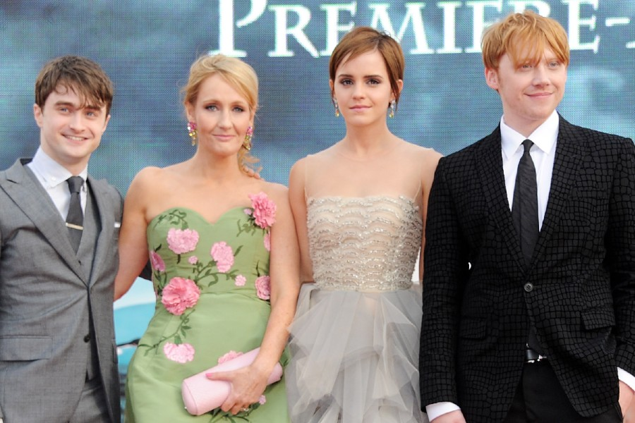

Joanne Rowling (Yate, 31 de julio de 1965), quien escribe bajo los seudónimos J. K. Rowling y Robert Galbraith, es una escritora, productora de cine y guionista británica, conocida por ser la autora de la serie de libros Harry Potter, que han superado los quinientos millones de ejemplares vendidos.
Este éxito literario supuso que la Sunday Times Rich List de 2008 estimase la fortuna de Rowling en 560 millones de libras, lo que la situó como la duodécima mujer más rica en el Reino Unido. Asimismo, Forbes ubicó a Rowling en el cuadragésimo puesto en su lista de las celebridades más poderosas de 2007 y la revista Time la seleccionó como «personaje del año» ese mismo año, resaltando la inspiración social, moral y política que les ha dado a los personajes de Harry Potter.
Rowling es una conocida filántropa que apoya instituciones de caridad como Comic Relief, One Parent Families y Multiple Sclerosis Society of Great Britain.
Rowling nació el 31 de julio de 1965 en Yate (Reino Unido), hija de Peter James Rowling y Anne Rowling, cuyo apellido de soltera era Volant. Su hermana Dianne, Di, nació en el hogar familiar el 18 de junio de 1967 cuando Rowling tenía 23 meses de edad.La familia se mudó al pueblo cercano de Winterbourne cuando Rowling tenía 4 años. Asistió a la Escuela Primaria St Michael's, un establecimiento fundado por el famoso abolicionista William Wilberforce y por la activista Hannah More en 1813. Se cree que su primer director en St. Michael's, Alfred Dunn, fue la inspiración del personaje de Harry Potter Albus Dumbledore.
 libros Carrera Profesional